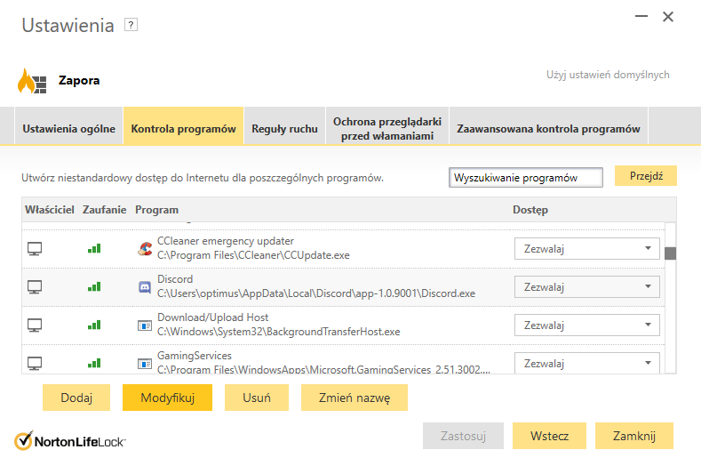

Zapora Sieciowa
Zapora sieciowa (firewall – ściana ogniowa) – jeden ze sposobów zabezpieczania sieci i systemów przed intruzami.
Termin ten może odnosić się zarówno do sprzętu komputerowego wraz ze specjalnym oprogramowaniem, jak i do samego oprogramowania blokującego niepowołany dostęp do komputera, na którego straży stoi. Pełni rolę połączenia ochrony sprzętowej i programowej sieci wewnętrznej LAN przed dostępem z zewnątrz, tzn. sieci publicznych, Internetu, chroni też przed nieuprawnionym wypływem danych z sieci lokalnej na zewnątrz. Często jest to komputer wyposażony w system operacyjny (np. Linux, BSD) z odpowiednim oprogramowaniem. Do jego podstawowych zadań należy filtrowanie połączeń wchodzących i wychodzących oraz tym samym odmawianie żądań dostępu uznanych za niebezpieczne.
Filtrowanie Pakietów
Najpowszechniejszym oraz najstarszym typem architektury zapory sieciowej jest zapora filtrująca pakiety. Zapora wykonuje proste sprawdzanie pakietów danych przechodzących przez router - sprawdza informacje, takie jak docelowy i początkowy adres IP, typ pakietu, numer portu i inne informacje z poziomu powierzchni, bez otwierania pakietu w celu sprawdzenia jego zawartości.
Jeśli pakiet nie przejdzie kontroli, jest odrzucany.
Zaletą tych zapór jest to, że nie wymagają one dużych zasobów sprzętowych. Oznacza to, że nie mają one dużego wpływu na wydajność systemu i są one stosunkowe proste. Jednak są one również stosunkowo łatwe do ominięcia w porównaniu do zapór sieciowych z bardziej zaawansowanymi możliwościami inspekcji.
Brama Pośrednicząca (Proxy)
Z tego typu architektury zapory sieciowej korzysta domena tihub.pl. Zapora dostarczana przez Cloudflare.

Jako kolejny uproszczony typ zapory, który ma na celu szybkie i łatwe zatwierdzanie lub odrzucanie ruchu bez zużywania znacznych zasobów obliczeniowych, bramy pośredniczące działają poprzez weryfikację protokołu sterowania transmisją (TCP). To sprawdzenie uzgadniania TCP ma na celu upewnienie się, że sesja, z której pochodzi pakiet, jest autentyczna.
Chociaż te zapory są niezwykle wydajne pod względem zasobów, nie sprawdzają samego pakietu. Tak więc, jeśli pakiet zawierał złośliwe oprogramowanie, ale miał odpowiedni "uścisk dłoni TCP", poszedłby prosto. Dlatego bramy pośredniczące nie wystarczą, aby same chronić firmę.
Zapora Stanowa
Te zapory łączą w sobie zarówno technologię inspekcji pakietów, jak i weryfikację uzgadniania TCP, aby zapewnić wyższy poziom ochrony, niż mogłaby zapewnić żadna z poprzednich dwóch architektur.
Jednak te zapory powodują również większe obciążenie zasobów obliczeniowych. Może to spowolnić przesyłanie legalnych pakietów w porównaniu z innymi rozwiązaniami.
Brama Sieciowa
Bramy sieciowe, znane również jako Zapory Proxy działają w warstwie aplikacji w celu filtrowania ruchu przychodzącego między siecią a źródłem ruchu. Zapory te są dostarczane za pośrednictwem rozwiązania w chmurze lub innego urządzenia proxy. Zamiast zezwalać na bezpośrednie łączenie się ruchu, zapora proxy najpierw nawiązuje połączenie ze źródłem ruchu i sprawdza przychodzący pakiet danych.
To sprawdzenie pakietu jest podobne do Zapory Stanowej, ponieważ sprawdza zarówno pakiet, jak i protokół uzgadniania TCP. Jednak zapory proxy mogą również przeprowadzać głębokie inspekcje pakietów, sprawdzając rzeczywistą zawartość pakietu informacyjnego, aby upewnić się, że nie zawiera on złośliwego oprogramowania.
Po zakończeniu sprawdzania pakietu i jego zatwierdzeniu do połączenia się z miejscem docelowym serwer proxy wysyła go. Tworzy to dodatkową warstwę separacji między klientem a poszczególnymi urządzeniami w Twojej sieci - przesłaniając je w celu zapewnienia dodatkowej anonimowości i ochrony Twojej sieci.
Jeśli istnieje wada zapór proxy, to może to spowodować znaczne spowolnienie z powodu dodatkowych kroków w procesie przesyłania pakietów danych.
Zapora Nowej Generacji
Wiele z ostatnio wydanych zapór sieciowych jest reklamowanych jako architektury "nowej generacji". Nie ma jednak zgody co do tego, co sprawia, że zapora sieciowa jest prawdziwie nowej generacji.
Niektóre typowe cechy architektur zapór sieciowych nowej generacji obejmują głęboką inspekcję pakietów (sprawdzanie faktycznej zawartości pakietu danych), sprawdzanie uzgadniania TCP i inspekcję pakietów na poziomie powierzchni. Zapory nowej generacji mogą również obejmować inne technologie, takie jak systemy zapobiegania włamaniom (IPS), które działają w celu automatycznego powstrzymania ataków na sieć.
Problem polega na tym, że nie ma jednej definicji zapory nowej generacji, dlatego ważne jest, aby sprawdzić, jakie konkretne możliwości mają takie zapory, zanim w nią zainwestujesz.
Zapora Programowa
Zapory programowe obejmują zapory dowolnego typu, które są instalowane na urządzeniu lokalnym, a nie na oddzielnym sprzęcie (lub serwerze w chmurze). Dużą zaletą zapory programowej jest to, że jest bardzo przydatna do tworzenia kompleksowej obrony poprzez izolowanie poszczególnych punktów końcowych sieci od siebie.
Jednak utrzymanie indywidualnych zapór programowych na różnych urządzeniach może być trudne i czasochłonne. Ponadto nie każde urządzenie w sieci może być kompatybilne z pojedynczą zaporą programową, co może oznaczać konieczność używania różnych zapór programowych w celu pokrycia każdego zasobu.
Zalety zapory programowej:
- - Małe koszty utrzymania
- - Idealna do użytku osobistego lub domowego
- - Łatwość zarządzania
Wady zapory programowej:
- - Zajmuje zasoby systemowe
- - Czasami całkowite usunięcie lub odistalowanie zapory jest trudne oraZ czasochłonne
- - Nie nadaje się, gdy czas reakcji jest krytyczny
Istnieje wiele popularnych zapór programowych, takich jak Avast Endpoint Protection, czy FortiGate NGFW. Instalacje oraz konfiguracje w systemie Windows zaprezentuję używając Norton AntiVirus, a w systemie Linux, użyję GUFW.
Instalacja
Plik instalacyjny pobiorę ze strony https://pl.norton.com/.
Jeżeli nie posiadamy aktywnej subskrypcji, można ją aktywować na stronie lub zakupić klucz u innych sprzedawców.
Aby zainstalować program należy najpierw założyć konto na stronie producenta. Jeżeli posiadamy aktywną subskrycję, program można pobrać w zakładce Moje konto, jeżeli nie posiadamy subskrypcji, należy przejść do tego linku: https://my.norton.com/extspa/onboard/retail/.
Po wprowadzeniu 25-znakowego klucza produktu zostaniemy przekierowani do strony, na której należy połączyć konto z kartą bankową, aby aktywować subskrypcję, można ją później usunąć. Plik instalacyjny powinien pobrać się automatycznie.
Pobieranie wymaganej zawartości powinno nastąpić automatycznie.
Po pobraniu wymaganej zawartości wystarczy kliknąć Zainstaluj.

Konfiguracja
Aby przejść do ustawień zapory sieciowej, w aplikacji Norton AntiVirus przy Bezpieczeństwo urządzenia kliknij Otwórz i Ustawienia.
Można dodawać nowe lub edytować i usuwać istniejące reguły.
Teraz dodam regułę o nazwie Nazwa reguły, która będzie zezwalać na ruch w obie strony z adresów: 192.168.69.80 i zakresu od 192.168.69.15 do 192.168.69.40.
Instalacja
Aby zainstalować zaporę GUFW, wystarczy wykonać polecenie sudo apt-get install gufw w wierszu poleceń.
Konfiguracja
Aby przejść do ustawień zapory sieciowej, w wierszu poleceń należy wywołać polecenie gufw oraz wpisać hasło.
Teraz należy włączyć zapory sieciowe.
Teraz dodam regułę o nazwie Nazwa reguły, która będzie blokować pakiety z portu 23 (Telnet).
Zapora Sprzętowa
Zapory sprzętowe wykorzystują fizyczne urządzenie, które działa w sposób podobny do routera ruchu w celu przechwytywania pakietów danych i żądań ruchu, zanim zostaną one połączone z serwerami sieci. Zapory sieciowe oparte na urządzeniach fizycznych, takie jak ta, wyróżniają się pod względem bezpieczeństwa obwodowego, zapewniając przechwycenie złośliwego ruchu zpoza sieci, zanim punkty końcowe sieci firmy zostaną narażone na ryzyko.
Główną słabością zapory sprzętowej jest jednak to, że często atakom wewnętrzym łatwo jest je ominąć. Ponadto rzeczywiste możliwości sprzętowej zapory mogą się różnić w zależności od producenta - na przykład niektóre z nich mogą mieć bardziej ograniczoną zdolność do obsługi jednoczesnych połączeń niż inne.
Zapora Sieciowa w Chmurze
Ilekroć rozwiązania chmurowe jest używane do dostarczania zapory, można je nazwać zaporą sieciową w chmurze lub zaporą jako usługa (FaaS). Zapory sieciowe w chmurze są przez wielu uważane za synonim zapór proxy, ponieważ serwer w chmurze jest często używany w konfiguracji zapory proxy (chociaż proxy niekoniecznie musi znajdować się w chmurze, często tak jest).
Dużą zaletą posiadania zapór sieciowych w chmurze jest to, że można je bardzo łatwo skalować w organizacji. W miarę wzrostu potrzeb można zwiększać pojemność serwera w chmurze, aby filtrować większy ruch. Zapory sieciowe w chmurze, podobnie jak zapory sprzętowe wyróżniają się bezpieczeństwem obwodowym.